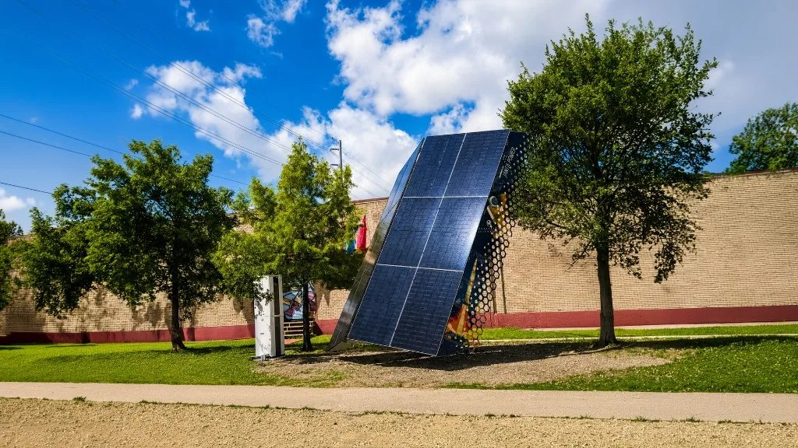
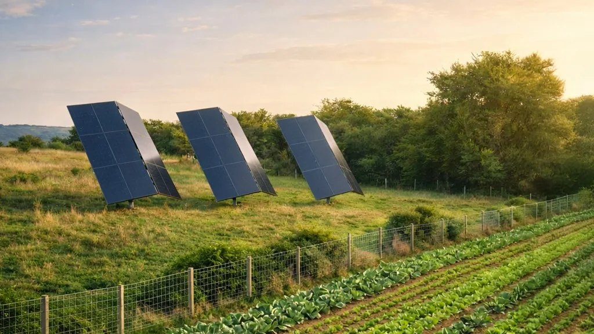

The intelligence system that can show you where every answer came from.
Identity resolution
A payments customer, a vendor id, a line in a PDF. Three records. One object.
Lineage
A number without a trail is not reportable. That rule is in the write path, not in a promise.

In production
